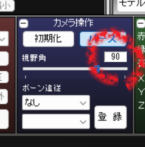
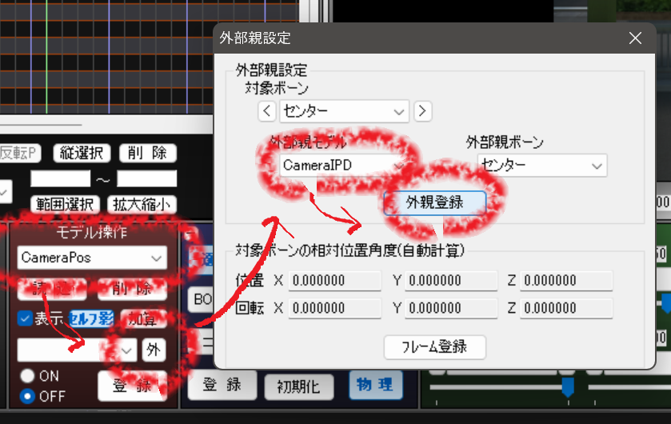

これは MMD でVR画像(360度画像、180度画像)を生成するためのキットです。
ここでいうVR画像というのは、以下のように周囲360°の風景が一枚の画像に収められているもののことです。
これをVR機器で見ると、まるでその場にいるかのように周囲を見渡すことができます。
MMD で VR 画像を生成するには、カメラの角度や位置を変えながら何度も何度も画像書き出しを行う必要があり、とても面倒です。
また、出力された画像をうまく結合してパノラマ画像にする作業も慣れてないと大変です。
このキットは面倒な作業を自動化し、ある程度簡単な操作だけで VR 画像を作れるようにしたものです。
なお、このキットでは動画は出力できません。
動作に必要なもの
このキットを動かすには AutoHotKey の v2 が必要です。
あらかじめダウンロードしてインストールしておいてください。
※ AutoHotKey は Windows 用のオートメーションツールです。
このキットでは MMD を自動的に操作したり、パラメータ設定用ダイアログを出したりするのに使っています。
また、OS が Windows 10 以上でないと多分動作しません。
使い方
1. 出力サイズの変更
"表示"→"出力サイズの変更" で画面サイズを 3072×3072 とかに変更します。
幅と高さは必ず同じ数に揃えてください。
ピクセル数は必ずしも 3072px でなくても構いませんが、ある程度大きなサイズにしておくことをおすすめします。
2. 物理演算の固定
同じフレームを何度も出力する都合上、物理演算によってボーンが動くと破綻してしまいます。
物理演算の結果をボーンに焼き込んで固定してしまうか、物理演算をトレースモードにしておきましょう。
(物理演算をボーンに書き込むには、物理が適用されているボーンを選択し、"ボーン操作" パネルの "物理" ボタンを OFF にしてください)
3. カメラの設定
- 視野角の変更
カメラの視野角をぴったり 90° に設定してください。

- カメラ位置・角度・距離の初期化
カメラを選択して、カメラ中心の座標・角度および距離を全て 0 に設定してください。

- カメラ設定用モデルをロード
このキットに同梱している "CameraPos.pmd" と "CameraIPD.pmx" を MMD にロードしてください。
- 外部親の設定 その1
CameraPos の外部親に CameraIPD を設定してください。

- 外部親の設定 その2
カメラの "ボーン追従" に CameraPos を設定してください。
- CameraPos を設定する
CameraPos を移動させて撮影したい場所が映るようにしてください。
"視点" パネルの "追従" ボタンを ON にしておくとリアルタイムにカメラが追従してくれるのでやりやすいと思います。
これで MMD の設定は完了ですが、次の自動操作で使うので MMD はまだ閉じないでください。
4. 画像の書き出し
このキットに同梱されている "01-mmd-cubemap.ahk" をダブルクリックしてください。
AutoHotKey が正しくインストールされていれば以下のようなダイアログが出るはずです。
出力したい画像にあわせて各種設定を調整してください。
よくわからなければデフォルトのままで大丈夫です。
設定が完了したら "書き出し開始！" を押してください。
MMD が自動的に操作され、カメラの角度と位置を変更しながら画像が次々と書き出されます。
書き出される画像の枚数はデフォルト設定だと 12 枚です。
自動操作が完了すると、出力先に指定したフォルダに前後左右上下の計6方向の画像が保存されているはずです。
ただし、ステレオ画像にチェックが入っている場合は左目用と右目用に各方向が2枚ずつ書き出されています。
また、180度画像を出力している場合、後ろ方向は不要なので出力されません。
5. VR画像の作成
このキットに同梱されている "02-cube2pano.ahk" をダブルクリックしてください。
以下のようなダイアログが出るはずです。
まず "入力画像" に4番の手順で出力された画像のうちの一枚をどれでもいいので指定してください。
残りの画像はファイル名の命名規則を利用して自動的にロードされます。
(ファイル名を変更してしまうとロードできなくなるので注意してください)
次に出力するファイル名を指定してください。
※ 出力画像の拡張子によって画像のフォーマットが自動的に選ばれます。
つまり拡張子を ".jpg" にすると JPEG 画像が、".png" にすると PNG 画像が出力されます。
残りの設定はわからなければデフォルトのままで大丈夫です。
最後に "生成！" ボタンを押すと VR 画像が生成されます。
この生成された画像を VR 機器に転送して閲覧すると立体的に見ることができるはずです。
細かいこと
ポストエフェクト
一部のポストエフェクトはVR画像と相性が悪いことがあります。
出力された画像に枠のようなものが見えたり、VR機器で見たときに謎のチラつきが見えたりした場合は、ポストエフェクトが原因である可能性があります。
何がダメかは判別が難しいので、まずはできるだけポストエフェクトを外して出力してみて、大丈夫なら徐々にポストエフェクトを足して試してみるのがよいかと思います。
大は小を兼ねる
4番の手順で360度画像を指定して書き出している場合、5番の手順で180度を指定してVR画像を作ることができます。
また、4番の手順でステレオ画像を指定して書き出している場合、5番の手順でステレオじゃないVR画像を作ることができます。
一方、これらの逆はできません。
つまり大は小を兼ねるということです。
License
このキットは MIT License の下に配布されています。